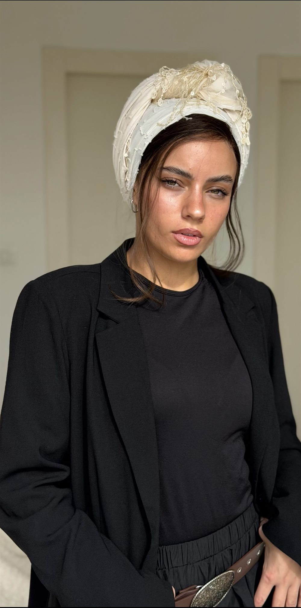
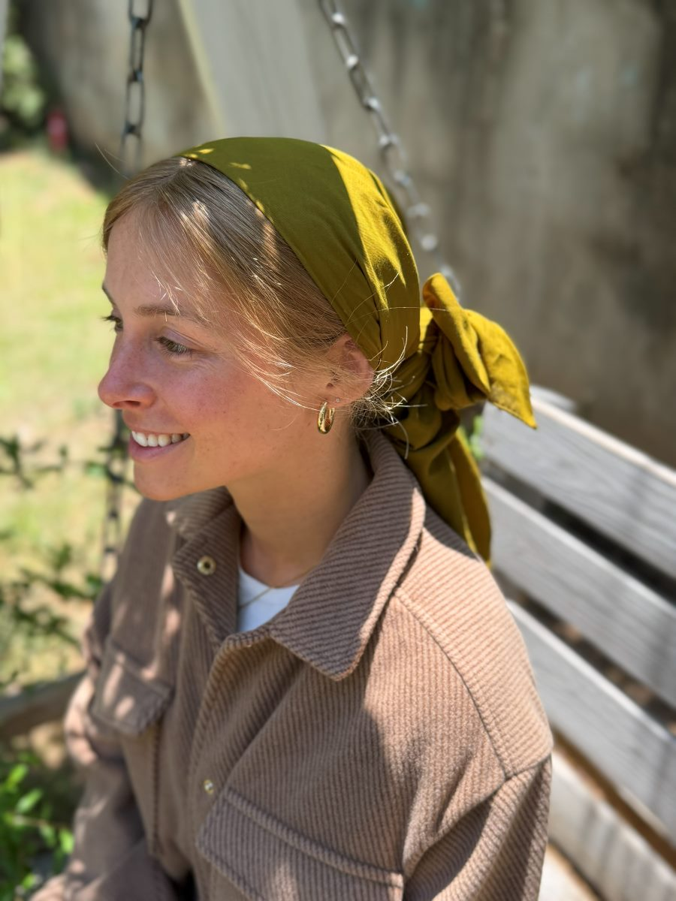
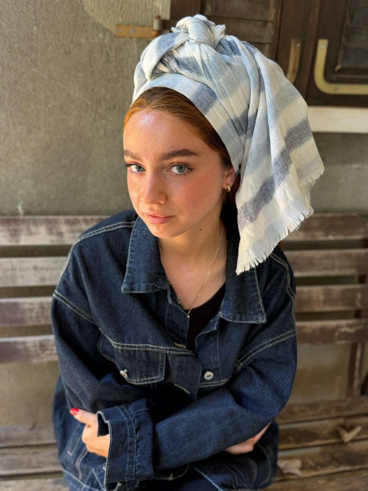
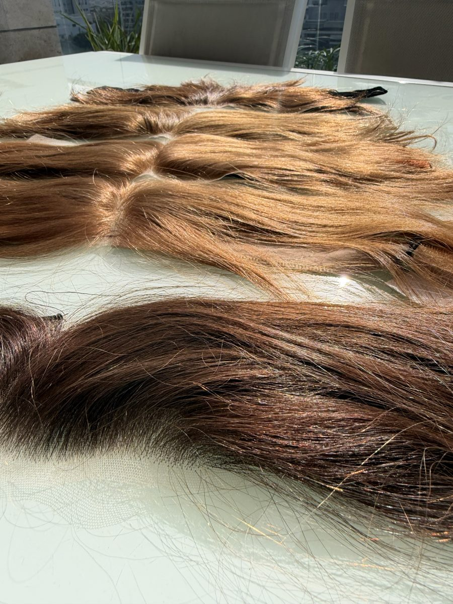
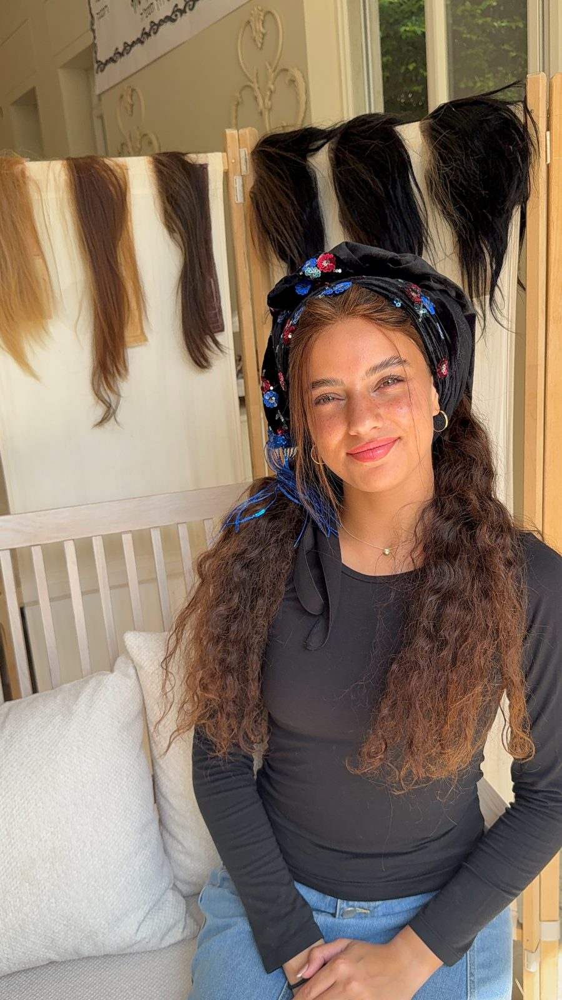
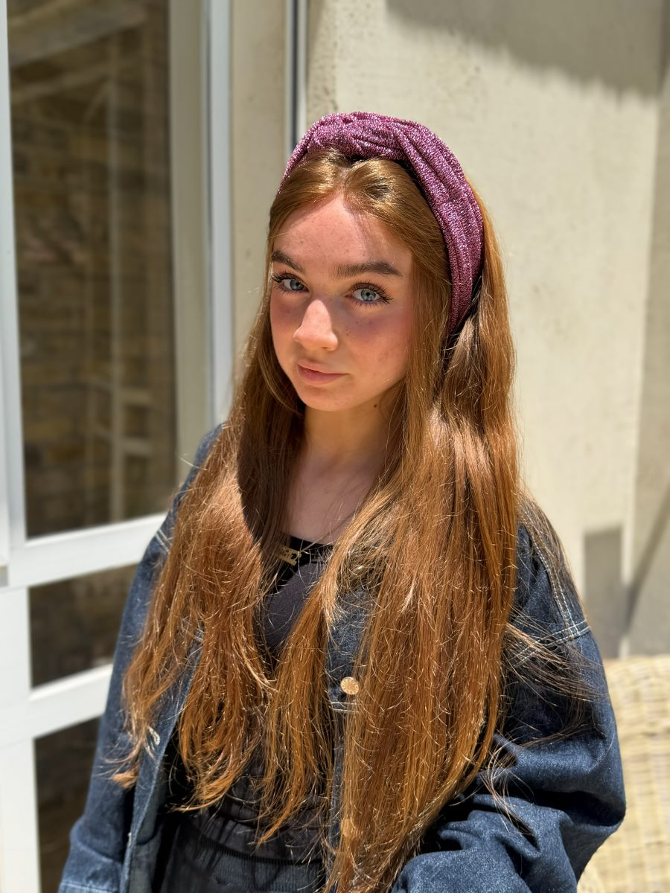
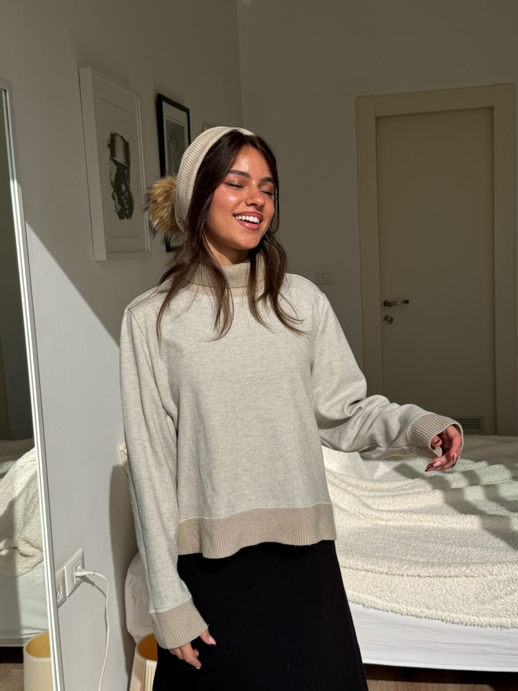
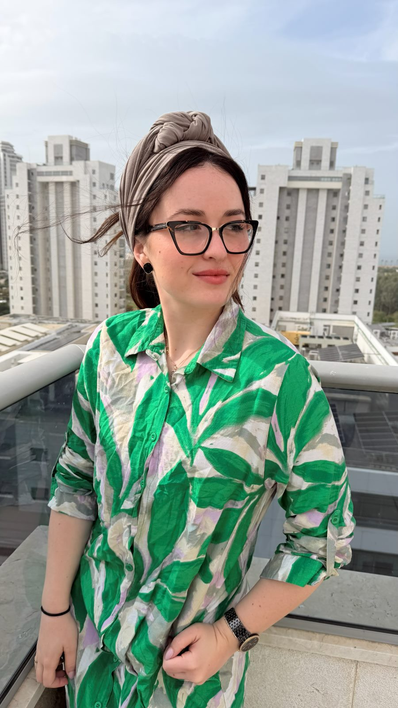
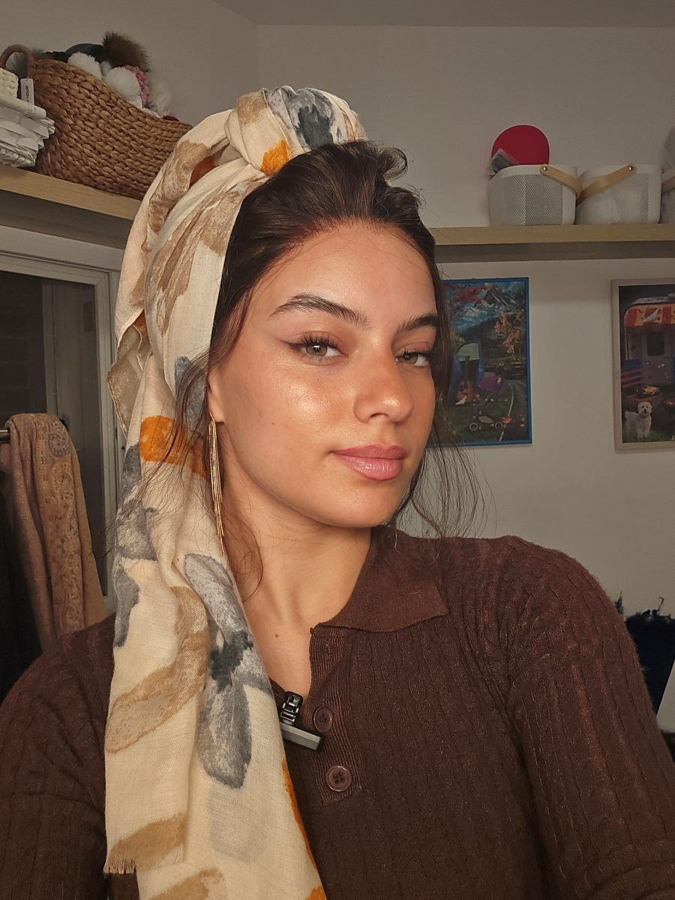
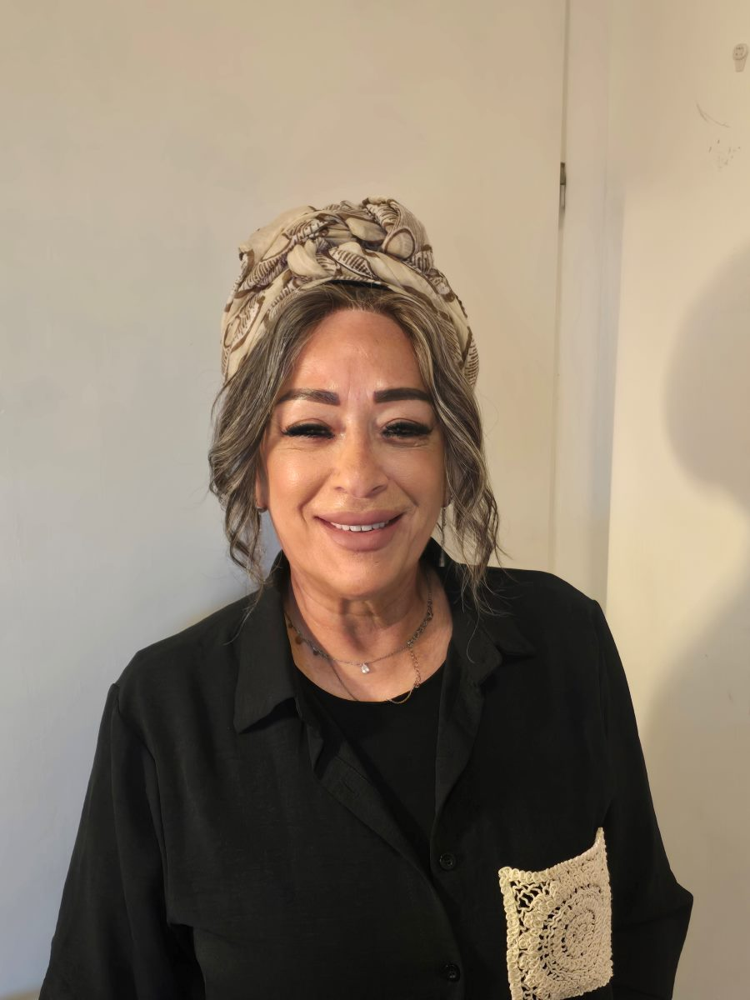

כל היופי שבשיער. כל הביטחון שבכיסוי.
הכירי את תַּכְלֵייס – תוספת שיער קדמית בעבודת יד ובהתאמה אישית, המשתלבת בטבעיות עם כיסוי הראש שלך ומעניקה מסגרת פנים מלאה, מחמיאה ומדויקת.
כי את לא צריכה לבחור בין כיסוי מלא למראה שאת אוהבת.

מה זו פאת פרונטופ?
פאת פרונטופ היא תוספת שיער קדמית המכסה את חזית הראש בלבד, ומיועדת לנשים החובשות מטפחת או מתמודדות עם שיער דליל. בתכלייס היא נתפרת בעבודת יד על לייס בעומק 8 ס"מ ומותאמת אישית לקו השיער, כך שהמראה נשאר טבעי לחלוטין גם מקרוב.
כי הבוקר שלך יכול להיראות אחרת.
בלי להתעסק עם השורשים בכל בוקר. בלי לדאוג לדלילות בקדמת הראש. בלי לוותר על המראה שאת אוהבת.
תכלייס נולדה כדי להעניק לך פתרון טבעי, נוח ומחמיא, שמשתלב עם כיסוי הראש שלך ומאפשר לך להרגיש יפה ובטוחה בכל יום מחדש. כי את לא צריכה לבחור בין המראה שאת אוהבת לבין הצניעות והערכים שחשובים לך.
בין אם את מחפשת פתרון לדלילות או לנשירה בקדמת הראש, רוצה להימנע מהתעסקות יומיומית בשיער או פשוט אוהבת מסגרת פנים מלאה ומטופחת – תכלייס מתאימה את עצמה אלייך.

בדיוק כמו שאת אוהבת.
שיער טבעי שניתן לסרק ולעצב בהתאם לסגנון שלך, עם התאמה אישית של הגוון, האורך והמרקם.
כי היופי שלך לא צריך להיראות כמו של אף אחת אחרת.

מושלמת עם המטפחת שלך.
תכלייס פותחה במיוחד עבור נשים שחובשות מטפחות וכיסויי ראש.
היא משתלבת עם מגוון סגנונות קשירה ומעניקה מסגרת פנים טבעית ומחמיאה, תוך שמירה על כיסוי הראש.
כך תוכלי ליהנות מהמראה שאת אוהבת, בדרך שמתאימה לך.

פחות התעסקות. יותר זמן לעצמך.
תכלייס מעניקה לך מראה שיער קדמי מסודר ומטופח, בלי הצורך להתעסק בכל בוקר בשורשים, בהחלקות או בעיצוב השיער הטבעי שלך.
פתרון קטן שעושה הבדל גדול בשגרת היום שלך.
לא עוד פאת פוני. תַּכְלֵייס.
מאחורי המראה הטבעי של תכלייס עומדות שלוש שנים של פיתוח, מחשבה ועבודת יד מדויקת.
כל פרט תוכנן כדי ליצור תוספת שיער קדמית שמשתלבת בהרמוניה עם מסגרת הפנים וכיסוי הראש שלך.
קו שיער שנראה טבעי, גם מקרוב.
הלייס העמוק מאפשר ליצור מעבר טבעי ועדין באזור המצח, למראה שיער המשתלב עם מסגרת הפנים ומעניק תחושה של צמיחה טבעית מקו השיער.
כי אין שתי נשים שנראות אותו הדבר.
גוון, אורך, מרקם ומסגרת פנים – כל פרט נלקח בחשבון כדי למצוא את התכלייס שמתאימה בדיוק לך.
נולדה מתוך צורך אמיתי.
תכלייס פותחה מתוך החיפוש אחר פתרון המשלב מראה שיער קדמי טבעי עם כיסוי ראש מלא.
לא רק תוספת שיער, אלא מוצר שתוכנן במיוחד עבור אורח החיים שלך.
פתרון שנולד מתוך הרצון לשלב בין יופי, נוחות וצניעות, תוך שמירה על כיסוי ראש מלא ובלי להתפשר על ההלכה.
דיוק שמרגישים בכל פרט.
כל תכלייס מיוצרת בעבודת יד, מתוך הקפדה על איכות השיער, מבנה הלייס, הגימור והמראה הסופי.
כי התוצאה היפה ביותר מתחילה בפרטים הקטנים.
מוכנה בשבילך, כבר עכשיו.
בסטודיו שלנו מחכים לך דגמים מוכנים במגוון גוונים, אורכים וסגנונות.
מגיעים לפגישת מדידה, בוחרים את הדגם המתאים, מבצעים התאמה אישית ונהנים מהאפשרות להתחדש כבר בפגישה הראשונה.
מוכן. מותאם. שלך.
תַּכְלֵייס. פשוט תפורה עלייך.
מסגרת הפנים שלך, הגוון שלך והסגנון שאת אוהבת.
בואי למצוא את התכלייס שמרגישה כאילו נוצרה במיוחד בשבילך.






בר זק | מייסדת תַּכְלֵייס
“תכלייס נולדה מתוך צורך אישי שלי.
במשך שנים חיפשתי דרך ליהנות ממראה שיער קדמי טבעי ומחמיא, בלי לוותר על כיסוי הראש ועל הערכים שחשובים לי.
אחרי שלוש שנים של פיתוח וניסיונות, נולדה תכלייס.
היום, כשאני פוגשת נשים שיוצאות מהסטודיו עם חיוך וביטחון מחודש, אני יודעת שהחיפוש הזה היה שווה הכול.
כי לכל אישה מגיע להרגיש יפה, בדיוק בדרך שלה.”
מה שחשוב לדעת לפני שמתחילים
מה ההבדל בין פאת פרונטופ לפאה מלאה?
פאה מלאה מכסה את כל הראש. פאת פרונטופ מכסה רק את החלק הקדמי, ומשאירה את שאר הראש מכוסה במטפחת. כך נשמר כיסוי ראש מלא, ובו בזמן נראה קו שיער טבעי בחזית.
האם רואים שזו לא השיער שלי?
הלייס בעומק 8 ס"מ יושב על המצח ונראה כמו קרקפת אמיתית, וקו השיער נתפר בעבודת יד בהתאמה אישית. גם במבט קרוב המראה נשאר טבעי, וזו בדיוק הסיבה שהדגם פותח במשך שלוש שנים.
למי פאת הפרונטופ של תכלייס מתאימה?
לנשים החובשות מטפחת ורוצות מראה שיער טבעי בחזית, לנשים המתמודדות עם שיער דליל או נשירה, ולכל אישה שמחפשת להרגיש בטוחה ונינוחה יותר מול המראה.
כמה זמן לוקח לקבל תכלייס?
בסטודיו יש דגמי מדף מוכנים שאפשר לבחור ולקחת כבר בפגישת ההתאמה הראשונה. ניתן לבצע שינויים והתאמות בהתאם לצורך.
כמה זה עולה ואיך מתאמים פגישת התאמה?
המחיר משתנה לפי הדגם, האורך והגוון, ונמסר בפגישת ההתאמה שבה מתאימים בדיוק את מה שמתאים לך. הפגישה היא ללא התחייבות. לתיאום אפשר לפנות בוואטסאפ או בטלפון 053-9593290.
איפה נמצא הסטודיו?
הסטודיו נמצא ברעננה ופגישות ההתאמה מתקיימות בו.
המראה שאת אוהבת. הביטחון שמגיע לך.
בואי להכיר את תכלייס ולמצוא את הדגם שמתאים לך.
בסטודיו שלנו ברעננה מחכה לך פגישת מדידה אישית, שבה נכיר אותך, נבין מה את מחפשת ונתאים את התכלייס למסגרת הפנים, לגוון השיער ולסגנון שלך.
אנחנו מעניקות שירות ומבצעות מכירות ללקוחות בכל רחבי הארץ. מוזמנת ליצור איתנו קשר ונשמח לעזור לך למצוא את הדרך המתאימה להתחדש בתכלייס.
פגישת המדידה ללא התחייבות.